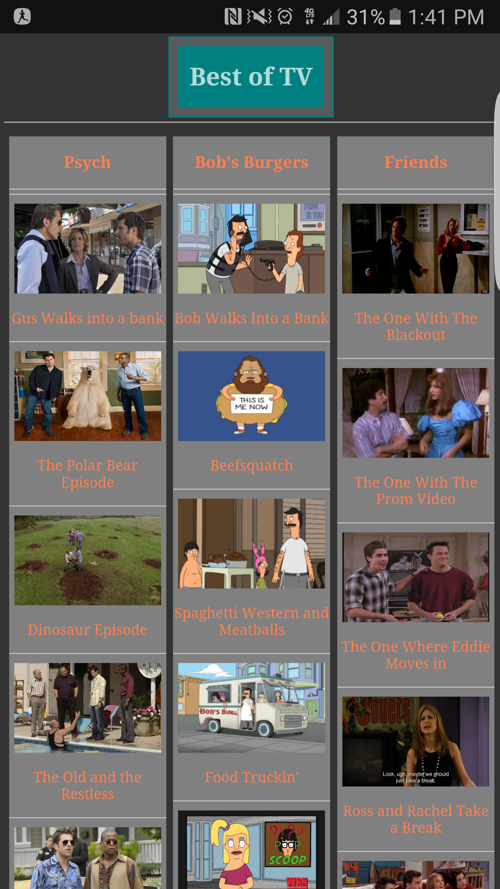
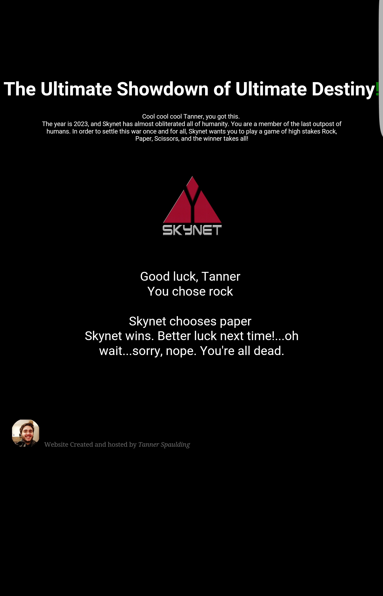

"Best of TV" was the first website that I ever built, and it is extremely simple, but it does it's job well. My wife has 3 TV shows she really loves. Psych, Bob's Burgers, and Friends. Of these 3 TV Shows, she doesn't like to watch them all in order, and she mostly likes only specific episodes. So I told her that I could build a website for her that is easy to use, and it has a list of all her favorite episodes, and that's all it does. It has links that will take you to that specific episode on Netflix in your browser, or if you're on a mobile device, it will open up the Netflix app and start playing the episode. I have it hosted from my home computer, and I leave my computer on most of the time, so anytime she wants to find something to watch, she can open up the website, and pick something from there. The url for this website is "tannersworld.asuscomm.com"
After I picked up some basic HTML and CSS skills, I started to delve into Javascript. This website is almost all javascript, and it plays a simple game of paper, rock, scissors. When the page first loads it will ask you for your name, and depending on the name you put in there, the opening sentence will differ. After you enter your name, you will choose either paper, rock, or scissors. Then the "computer" chooses randomly, having a 33% chance to pick each option. Once the computer has chosen, javascript will then compare the user's answer to the computer's answer, and determine who the winner is. The website itself was made to show off javascript, and as such isn't the best designed website, but it is technically functional! Once the game is over, you can hit refresh to try your luck again! :) This site is also being hosted from my home computer, and the url is "tannersworld.asuscomm.com/skynet.php/"
